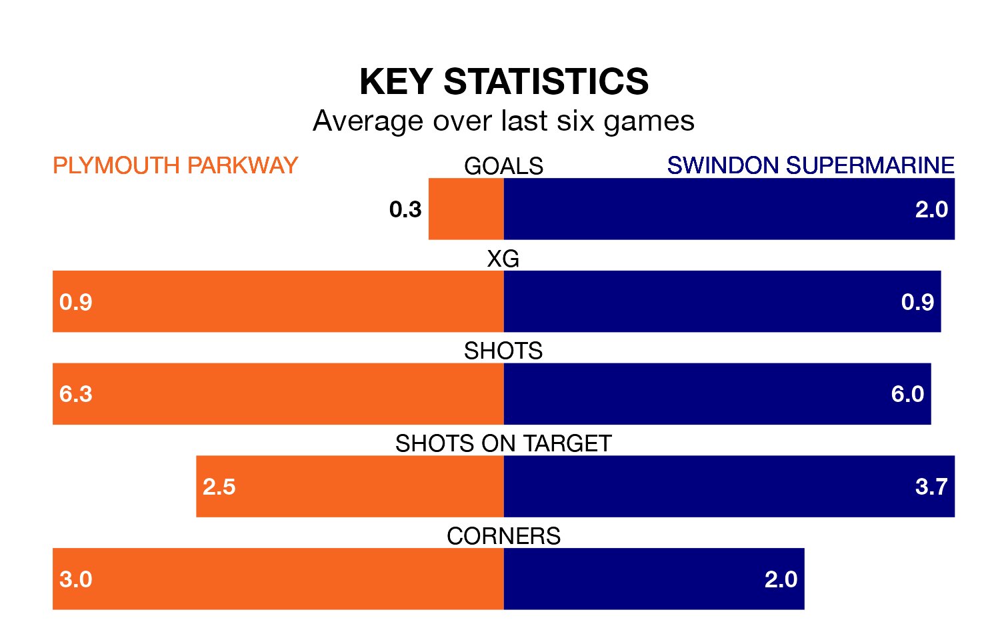

Struggling Plymouth Parkway face Swindon Supermarine on Sunday looking to build on a win in their last league outing.
After securing all three points with a 1-0 victory over Poole Town on April 1, Plymouth Parkway sit 20th in the Southern League Premier South.
They travel to play a Swindon Supermarine side 15th in the standings, who also won their last match, 2-0 against Didcot Town.
With 41 goals in 28 games so far this season, Plymouth Parkway are the league's second-lowest scorers with 1.5 goals per game. But they are conceding fewer than average too, letting in 40 goals at a rate of 1.4 per game.
Swindon Supermarine, meanwhile, are average scorers, with 1.7 goals per game. They have conceded 2.2 goals per game.
The home team are in bad form in the Southern League Premier South, with one win and a draw from their last six games.
With two wins and three draws over that period, the visitors' form is better – they have taken nine points from 18, compared to Plymouth Parkway's four.
In the last three years, Plymouth Parkway and Swindon Supermarine have played each other on three occasions. Plymouth Parkway won one of them and Swindon Supermarine the other.
Their last meeting was on March 9, when Swindon Supermarine won 3-0 at home.
Updated: 16:41 (UTC), 04/04/24